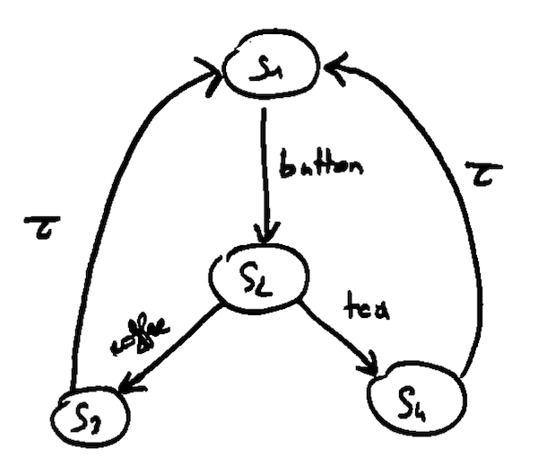
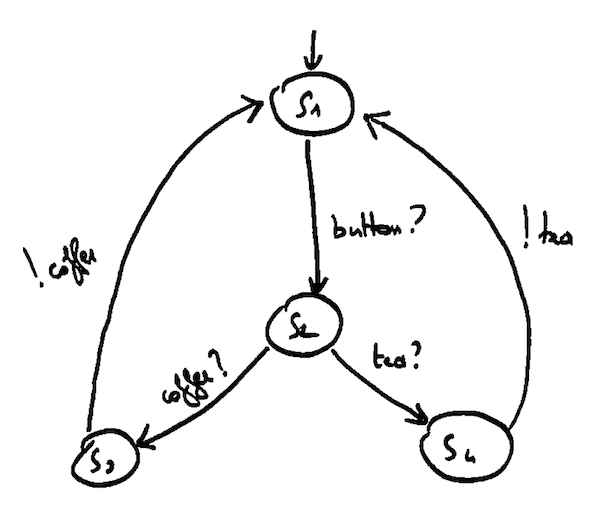

$$ L = (S, Act, \rightarrow) $$
with
$$ S = \lbrace s_{1}, s_{2}, s_{3}, s_{4} \rbrace $$
and
$$ Act = \lbrace COFFEE, TEA, BUTTON \rbrace $$
$$
\begin{align}
traces(s_{3}) =
& \lbrace \\
& BUTTON, \\
& BUTTON \cdot TEA \cdot BUTTON, \\
& \dots \rbrace = traces(s_{1}) = traces(s_{4}) \\
\\
traces(s_{2}) =
& \lbrace \\
& TEA, \\
& COFFEE, \\
& TEA \cdot BUTTON \cdot TEA, \\
& \dots \rbrace
\end{align}
$$

$$
\begin{align}
Act_{I} = & \lbrace BUTTON?, COFFEE?, TEA? \rbrace \\
Act_{U} = & \lbrace COFFEE!, TEA! \rbrace
\end{align}
$$
Michelin relies on a method close to the Computer Integrated Manufacturing (CIM) approach to control its production:
These levels can exchange data among them.